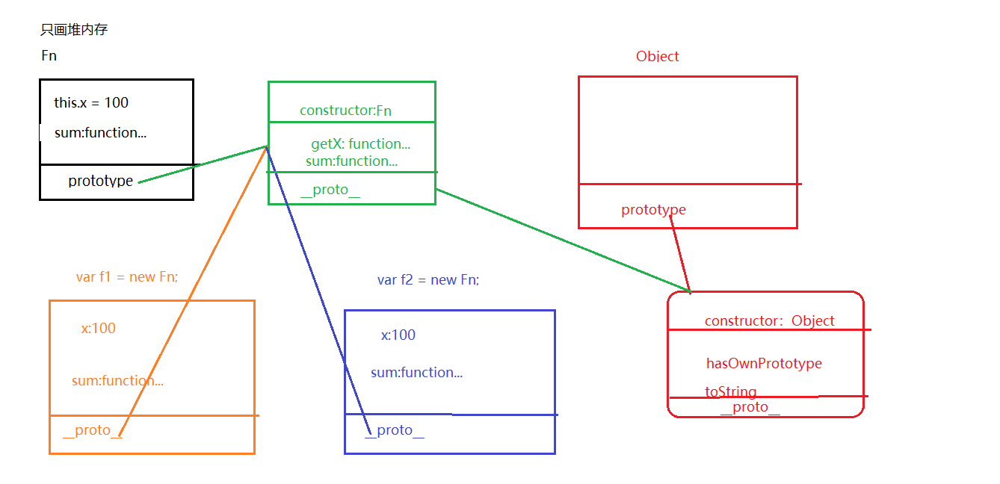

面向对象
把描述同一个事物(同一个对象)的属性和方法放在同一个内存空间下
不同事物之间的属性即使属性名相同，相互也不会冲突
这种方式为js的面向对象
1 | var person1 = { |
工厂模式
把实现同一个事情的相同代码放在同一个函数中
1 | function createJSPerson(name, age){ |
通过函数createJSPerson批量产生类实例
构造函数模式
构造函数的目的就是创建一个自定义类，并且创建这个类的实例
构造函数模式和工厂模式的区别
1 执行的时候
普通函数执行 ->createJsPerson()
构造函数模式 ->new createJsPerson()
new 执行后 createJsPerson就是一个类
1 | function CreateJsPerson(name, age) { |
类是函数类型， 他通过new执行变成了一个类，但他本身也是一个普通函数
实例都是对象类型
2 在函数代码执行的时候
相同：都形成私有作用域，然后经历形参赋值->预解释->代码从上到下执行(类和普通函数一样)
不同:在代码执行之前，不用自己在手动创建对象了，浏览器会默认创建一个对象数据类型的值
这个对象其实就是我们当前类的一个实例
接下来，代码从上到下执行，以当前实例为执行主体(this代表的就是当前实例)分别把属性名和属性值
赋值给当前实例
1 | function PersonClass(name, age){ |
在构造函数模式中，类中(函数体中)出现的this.xxx = xxx 中的this是当前类的一个实例
1 | var p1 = new PersonClass("zack", 32) |
3 p1和p2都是createjsperson这个类的实例，都拥有writeJs这个方法，但是不同实例之间的方法是不一样的
在类中给实例增加的属性(this.xxx=xxx)属于当前实例的私有属性，实例和实例之间是单独的个体
私有属性之间是不相等的
1 | console.log(p1.writeJs === p2.writeJs) |
类中的this
1 | function Fn(){ |
1 构造函数模式中new Fn()执行， 如果Fn不需要传递参数，那么小括号可以省略
2 this的问题:在类中出现的this.xxx=xxx出现的this都是当前类的实例，而某一个属性值如果是方法
该方法中的this要看执行时前面是否有”.”才能知道this是谁
1 | var f1 = new Fn; |
3 类有普通函数的一面，当函数执行的时候，var num 其实只是当前形成的私有作用域中私有变量而已
它和我们的f1这个实例没有任何关系
1 | //undefined |
4 在构造函数模式中，浏览器会默认把我们的实例返回(返回的是一个对象数据类型的值)
如果我们自己手动写了return返回，返回的是一个基本数据类型的值，当前实例是不变的，例如return 100
返回的是一个引用类型的值，当前的实例会被自己返回的值给替换掉 例如 return {name:”zack”}
5 检测某一个实例是否属于这个类
1 | console.log(f1 instanceof Fn) |
6 f1和f2都是Fn这个类的一个实例，都拥有x和getx两个属性
但是这两个属性是各自的私有属性
1 | var f2 = new Fn; |
批量设置属性
构造函数有一个问题就是变量的方法不是公有的，每个变量保存了一份自己的方法。这样不符合面向对象的设计
其实每个类都有一个prototype属性，它指向一片系统开辟的空间，所有类实例共享这篇空间。
而每个实例都有一个_proto_属性，也指向这个空间，这个空间同样存储了一个类对象，类对象有一个属性contructor表示
代表他的构造类，该类对象还有一个_proto_属性也指向了一个系统开辟的空间，该空间存储的类实例对象为Object类型的。
这个类对象的constructor属性值为Object
所以Object类的prototype也指向了这个Object类实例。
1 | <script type="text/javascript"> |
将上述类关系画成图形如下

Fn类的prototype指向了系统开辟的空间，该空间存储了一个实例，(我们假设命名其为A)其constructor属性为Fn，
并且包括getX和sum公有方法。
每一个类对象都有一个_proto_属性，f1和和f2的_proto_也指向了A。
因为A是类的实例，所以A也有_proto_属性，其属性指向另一个对象B，这个B也有一个constructor属性为Object，
B的_proto_和Object的prototype指向的都是B自己。
所以每一个对象实例都可以根据_proto_找到Object类型的实例。
每一个类的都可以根据prototype找到Object类型的实例。这就是原型链
重构原型链对象
我们可以自己开辟一块新的内存，存储我们公有的属性和方法，把浏览器原来的内存替换掉
1 | function Fn(){ |
只有浏览器天生给Fn.prototype开辟的堆内存里才有constructor，我们自己开辟的堆内存中没有这个属性，所以要手动添加。
我们可以通过修改堆内存对象的属性，达到添加方法的目的
1 | Array.prototype.mysort=function(){ |
原型模式的this
在原型模式中，this常用的有两种情况
在类中this.xxx=xxx; this代表的就是当前实例
在某一个方法中的this，this需要看执行的时候方法前”.”是谁，this就是谁
- 需要先确定this指向是谁
- 把this替换成对应的代码
- 按照原型链查找机制，一步步查找结果
1
2
3
4
5
6
7
8
9
10
11
12
13
14
15
16
17
18
19
20
21
22
23
24
25function Fn(){
this.x=100
this.y=200
this.getY= function(){
console.log(this.y)
}
}
Fn.prototype={
constructor:Fn,
y:300,
getX:function(){
console.log(this.x)
},
getY:function(){
console.log(this.y)
}
}
var f = new Fn
f.getX() //f.x -> 100
f.getY() //f.y -> 200
f.__proto__.getX()//undefined
Fn.prototype.getX()//undefined
f.__proto__.getY() //3001
2
3
4
5f.getX()中this为f，所以f.x为100
f.getY()中this为f, 所以f.y为200
f.__proto__.getX() 因为f.__proto__中没有x，所以为undefined
Fn.prototype.getX() 因为Fn.prototype和f.__proto__指向的堆内存是一个，所以也为undefined
f.__proto__.getY() 因为f.__proto__中有y，所以输出为300
我们实现一个数组去重的方法
1 | Array.prototype.myUnique = function() { |
我们实现了去重方法，并在方法内返回this，这么做的好处就是可以继续调用array的其他方法，也就是大家所说的链式调用
比如我们可以继续调用sort方法
1 | ary.myUnique().sort(function(a,b){return a-b}) |
总结
1 | 构造函数模式找到了类和实例的概念，并且实例和实例之间是独立开的 |
感谢关注
感谢关注我的公众号